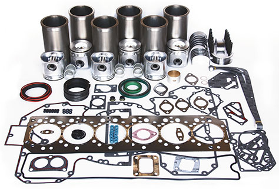
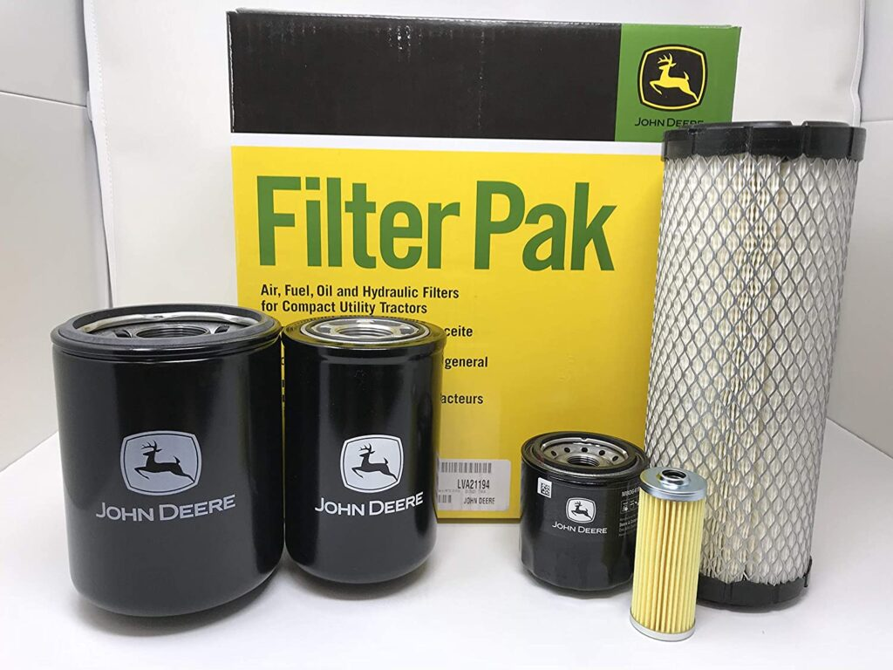
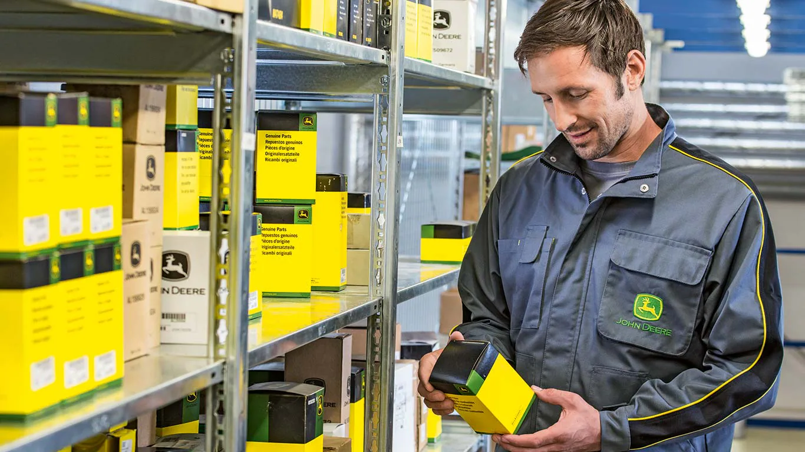

Repuestos Originales John Deere

Componentes de Motor
Repuestos para motores, pistones, bielas, válvulas y más.

Filtros
Filtros de aire, aceite, combustible e hidráulicos originales.

Aceites y Lubricantes
Aceites premium y lubricantes para el mejor cuidado de tu maquinaria.

Repuestos Generales
Todo tipo de repuestos y accesorios para tu John Deere.
Todos nuestros repuestos son originales y cuentan con garantía John Deere.